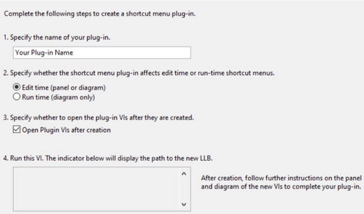
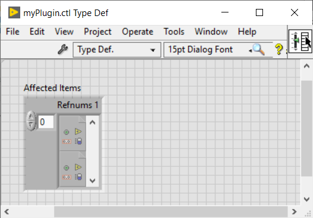
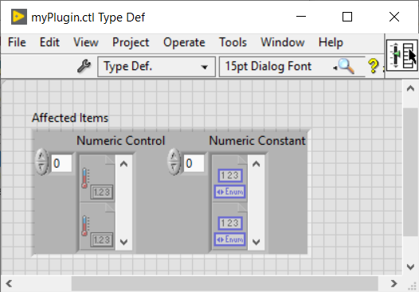
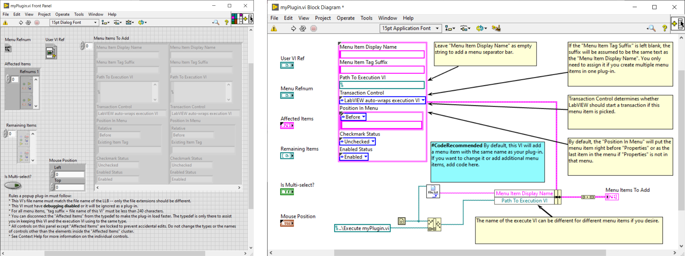
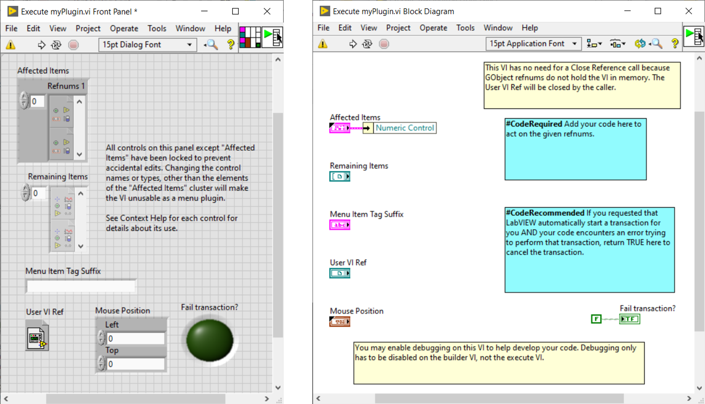

Plug-in de Menu Contextuel pour LabVIEW
Table des Matières
Généralité
Avec LabVIEW 2015 est apparu la possibilité d'ajouter des éléments personnalisés aux menus contextuels (c'est-à-dire aux menus de clic droit) des objets de la face-avant et du diagramme, en utilisant du code G. Cela vous permet de personnaliser votre éditeur LabVIEW, en utilisant du code G, afin d’ajouter de nouveaux éléments de menu, de réorganiser ou remplacer des éléments de menu existants et manipuler des éléments de menu (activer/désactiver, cocher/décocher, ...).
Les menus contextuels de LabVIEW sont accessibles à partir des faces-avant et des diagrammes lors de l’édition et uniquement à partir des diagrammes lors de l'exécution. A l'exécution, le menu contextuel des face-avant utilise une autre technologie, que vous connaissez peut-être déjà sous le nom de Menu contextuel (Run-Time Menu), fichiers *.rtm.
Comment ça marche ?
Au démarrage, LabVIEW recherche et charge les plug-ins de menu contextuel à partir de LLB présent à certains emplacements spécifiques.
Il existe 2 types de plug-ins se situant dans des emplacements différents :
- Plug-in spécifique à la version : utilisé uniquement par une seule version de LabVIEW.
- Pour les plug-ins affectant les objets de la face-avant et du diagramme à l'édition, utilisez le dossier <répertoire d'installation de LabVIEW>\resource\plugins\PopupMenus\edit time panel and diagram
- Pour les plug-ins qui affectent les objets de diagramme a l’exécution, utilisez le dossier <répertoire d'installation de LabVIEW>\resource\plugins\PopupMenus\run time
- Plug-in indépendant de la version : partagé entre toutes les versions de LabVIEW.
- Pour les plug-ins affectant les objets de la face-avant et du diagramme à l'édition, utilisez le dossier <LabVIEW Data>\PopupMenus\edit time panel and diagram diagram
- Pour les plug-ins qui affectent les objets de diagramme a l'exécution, utilisez le dossier <LabVIEW Data>\PopupMenus\run time
Si deux plug-ins ont le même nom, LabVIEW donnera la priorité au plug-in dans le répertoire <répertoire d'installation de LabVIEW>\resource\plugins\PopupMenus et n'exécutera pas l'autre.
Par défaut l’emplacement du <répertoire d'installation de LabVIEW> est :
- Sous Windows: C:\Program Files xx\National Instruments\LabVIEW 20xx\
- Sous Mac OS: /Applications/National Instruments/LabVIEW 20XX 64-bit/
Par default l'emplacement du répertoire <LabVIEW Data> est:
- Sous Windows: C:\Users\Username\Documents\LabVIEW Data
- Sous Mac OS: /Users/Username/Documents/LabVIEW Data/
L'anatomie d'un plug-in LabVIEW Shortcut
Un plug-in de menu contextuel contient obligatoirement 3 composantes principales:
- La définition de type Éléments concernés (Affected Items) : spécifiant les classes d'objets sur lesquelles le plug-in fonctionne.
- Un VI Constructeur (Builder VI) : ajoutant/modifiant/supprimant des éléments de menu. Appelé lors de la construction du menu contextuel.
- Un VI Exécuter (Execute) : exécutant le code de script pour effectuer les opérations du plug-in. Appelé lorsque l’utilisateur a sélectionné le menu du plug-in.
Un plug-in de menu contextuel doit être enregistré dans une LLB afin d'être chargé par LabVIEW au lancement. Les LLB permettent un chargement rapide de la hiérarchie du VI et une distribution facile avec un seul fichier. Vous pouvez placer d’autres VIs utiles dans la LLB ou dans un sous-répertoire (ils seront ignorés par LabVIEW lors de la recherche de plug-ins).
Créer son propre plug-in de menu contextuel
Comment commencer?
Lorsque vous créez un plug-in de menu contextuel, vous passerez par 3 étapes :
- Spécifier les objets affectés par le plug-in.
- Déterminer comment les éléments personnalisés apparaîtront dans le menu contextuel.
- Modifier ce que plug-in exécute lorsque l’utilisateur sélectionne l'élément personnalisé.
LabVIEW propose un utilitaire pour nous guider dans la création de nouveaux plug-ins de menu contextuel.
Ouvrez le VI Create Shortcut Menu Plug-In From Template, situé dans le dossier \resource\plugins\PopupMenus\, et remplissez les différents champs, puis lancer l’exécution du VI.

Vous devez entrer le nom de votre plug-in, spécifier si le plug-in de menu contextuel affecte les menus contextuels à l’édition ou à l'exécution, et éventuellement cocher/décocher Ouvrir les VIs de plug-in après la création, avant d'exécuter le VI.
Cet utilitaire génère la LLB, avec les 3 composantes principales d'un plug-in Shortcut Menu, correctement nommés et dans le bon emplacement.
Utilisons un exemple réel pour illustrer le processus de création d’un plug-in de menu contextuel dans LabVIEW. Imaginons que nous souhaitions implémenter un plug-in de menu contextuel, appelé myPlugIn, qui modifiera la couleur d'arrière-plan des commandes numériques et des constantes numériques.
Éléments concernés
Tout d'abord, nous devons spécifier les objets de la face-avant ou du diagramme sur lesquels notre plug-in fonctionnera en modifiant la définition de type Éléments concernés.

Ce Typedef, contient un cluster de tableaux de Refnums du VI Server, représente les objets sélectionnés des types spécifiques.
Vous pouvez ajouter un objet en ajoutant un tableau d'un type de refnum, supprimer un objet en supprimant un tableau ou choisir un objet différent en cliquant avec le bouton droit sur un tableau >> "Sélectionner une classe de VI Server" et en sélectionnant le type de refnum souhaité sous le Hiérarchie générique.
Pour répondre à nos exigences myPlugIn, les éléments affectés doivent avoir 2 tableaux, un pour les objets de contrôle numérique et un pour les objets de constante numérique. Ensuite, nous avons le Typedef suivant :

En fonction des types d'objets définis dans le Typedef Éléments affectés, LabVIEW exécute un ensemble spécifique de VIs sur un clic droit donné. Dans notre cas, notre VI Builder sera appelé à la suite d’un clic droit sur les commandes numériques de la face-avant et sur les constantes numériques du diagramme.
 Remark
Remark
- Vous pouvez déconnecter les "éléments concernés" du typedef pour accélérer le chargement du plug-in. Le typedef n'est là que pour vous aider à garder ce VI et le VI d'exécution utilisant le même type.
- N'incluez que les classes les plus spécifiques affectées par votre plugin.
VI Constructeur
Maintenant, nous devons dire à LabVIEW quels éléments ajouter, basculer ou supprimer du menu contextuel.

Dans le VI Constructeur (Builder), chaque élément de menu est décrit par :
- Menu Item Display Name: correspond au texte affiché dans le menu contextuel. S'il est vide, cela ajoute une barre de séparation. Par défaut, le nom d'affichage de l'élément est le nom du VI Builder (sans l'extension de fichier). Changeons-le en "Changer la couleur d'arrière-plan", ce qui aide l'utilisateur final à savoir l’action qui s’exécutera lors de la sélection de cet élément.
- Menu Item Tag Suffix_: est utilisé lorsque vous affectez plusieurs éléments de menu dans un seul plug-in.
- Path To Execution VI: est le chemin du VI que LabVIEW lancera si l'utilisateur final sélectionne cette entrée.
- Transaction Control — indique à LabVIEW d'ajouter ou non une option Édition > Annuler pour l'opération effectuée, lorsque l'élément est sélectionné, dans le VI de l’utilisateur.
- Position In Menu — indique où (avant, à la place de, après, dans le sous-menu), par rapport à la balise d'élément de menu spécifiée, vous souhaitez que votre élément apparaisse dans le menu. Par défaut, l'élément de menu se trouvera juste avant l’entrée "Propriétés" ou sera le dernier élément du menu si "Propriétés" n’existe pas dans le menu.
- Checkmark Status: spécifie s'il faut activer ou désactiver l'élément sélectionné dans le menu.
- Enabled Status: spécifie s'il faut placer une coche à côté de l'élément dans le menu.
Avec les entrées du VI nous récupérons des informations sur la sélection de l'utilisateur:
- User VI Ref: refnum du VI sur lequel l'utilisateur a cliqué avec le bouton droit.
- Refnum menu: refnum du menu contextuel des éléments concernés.
- Affected Items: liste des objets affectés par le plug-in, à partir de la sélection de l'utilisateur.
- Remaining Items: liste de tous les autres objets de la sélection de l'utilisateur.
- Is Multi-select?: indique si l'utilisateur a sélectionné un seul objet ou plusieurs objets.
- Mouse Position: coordonnées de l'endroit où l'utilisateur a cliqué.
Basé sur les informations de la sélection de l'utilisateur il est possible d’implémenter certaines logiques pour indiquer à LabVIEW quels entrées ajouter au menu.
Revenons à notre exemple, voici les règles que nous allons suivre :
- S'il s'agit d'une sélection d'objet unique, l'élément de menu se trouvera après l'entrée "Remplacer".
- S'il s'agit d'une sélection d'objets multiples, elle se trouvera après l'entrée "Éléments visibles".
- Si la sélection contient des terminaux de type contrôle, nous ne voulons pas afficher cette entrée au menu.
 Mise en garde
Mise en garde
- Ne modifiez pas les commandes affectées aux terminaux du connecteur du VI Builder. Pour charger et exécuter les plug-ins, LabVIEW a besoin que les noms, types et connexions soient les mêmes que ceux prédéfinis.
- Le nom de ce VI doit correspondre au nom de la LLB – seul diffère leurs extensions.
- Ce VI doit avoir le débogage désactivé, sinon il sera ignoré au chargement des plug-ins.
- Pour tous les éléments du menu, "tag suffix + file name of this VI" ne doit pas avoir plus de 240 caractères.
Remarque
- Assurez-vous que le VI Builder est léger pour éviter le temps de chargement du menu contextuel.
- Si votre élément de menu lance une boîte de dialogue, terminez le texte de l'élément par "..."
- Tous les contrôles de ce panneau, à l'exception des "Affected Items", sont verrouillés pour éviter toutes modifications accidentelles.
- Les VIs Builder restent en mémoire après la première exécution, il est donc possible d’utiliser des VIs Globaux :
- Pour conserver les données entre les exécutions du plug-in.
- Pour partager des données entre le VI de construction et le VI d'exécution.
- Comme les outils de débogage (sondes, points d'arrêt, etc.) ne peuvent pas être utilisés dans le VI Builder, préférez l’utilisation de fonctions telles queécrire dans des fichiers journaux, boite de dialogue à un bouton, Debug Write.vim, etc.
VI Exécuter
Passons à l'étape finale et définissons les actions que LabVIEW exécutera lorsque l’utilisateur sélectionne un élément personnalisé dans le menu local.

Comme indiqué ci-dessus, LabVIEW charge les plug-ins de menu contextuel au démarrage, il est donc nécessaire de redémarrer LabVIEW pour que les modifications soient prises en compte et que votre plug-in apparaisse dans le menu contextuel.
Mise en garde
- Soyez prudent lors de la lecture de la propriété Type de données: accéder aux types de données d’un objet dans des instances d'application différentes peut amener des problèmes. Si vous avez besoin de lire un type de données, faites-le dans l'instance d'application du VI propriétaire ou utilisez la fonctionDemander une désallocation.
Remarque
- Assurez-vous que le VI constructeur est léger pour éviter un temps de chargement du menu contextuel trop long.
- Tous les contrôles de ce panneau, à l'exception des "Affected Items", sont verrouillés pour éviter toutes modifications accidentelles.
- Les outils de débogage peuvent être utilisés dans le VI Exécuter.
- Il est possible de recharger des plug-ins sans redémarrer LabVIEW, en appelant la méthode Menus:Rafraîchir. Vous pouvez utiliser le VI : <répertoire d'installation de LabVIEW>\resource\plugins\PopupMenus\support\Refresh Menus.vi qui appel cette methode.